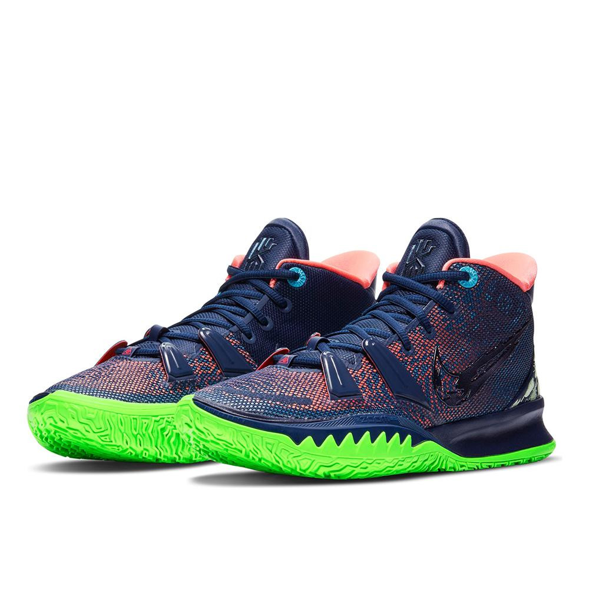

-


Kyrie Irving kreativna je snaga na terenu i izvan njega. Cipele su mu potrebne kako bi išao u korak sa svojim igranjem,
ali i sinkronizirao se sa svojim stilom i etosom pomicanja granica. Kyrie 7 stvoren je za sljedeću generaciju povrata energije,
upravljanja i brzine. Dizajniran je kako bi igračima na svim razinama pomogao da iskoriste svoj prvi brzi korak, optimizirajući
pristajanje cipele, izgled terena i bankarske sposobnosti.
-Mrežasti detalji omotaju se oko vašeg stopala kako bi se stvorilo usko i udobno pristajanje.
Čipke se provlače kroz oblikovane peraje koje se povlače preko vašeg prednjeg dijela stopala kad vežete.
-Velika Zoom Air jedinica prednjeg dijela stopala zakrivljena je kako bi se savila u više smjerova. Pruža povrat energije za brzi zavoj.